00:02我们已经看到了代价函数的数学定义。
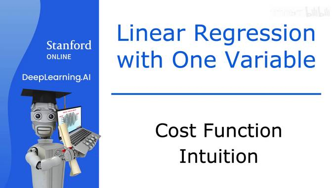
00:06现在，让我们来建立一些关于代价函数到底在做什么的直观理解。
00:10在本期视频中，我们将通过一个例子来看看，如何使用代价函数为你的模型找到最佳参数。
00:19我知道这期视频比其他视频稍长一些，但请耐心听我讲。
00:28回顾一下，这是我们目前所了解的关于代价函数的内容。
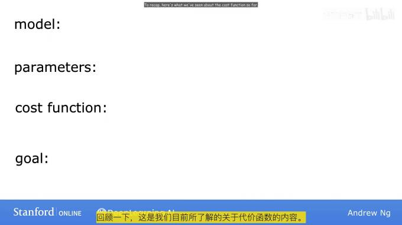
00:34你想给训练数据拟合一条直线，所以你有了这个模型 f 下 w，下 b，括号 x，等于 w 乘以 x 加 b。
00:46在这里，模型的参数是 w 和 b。
00:50现在，根据为这些参数选择的值，你会得到不同的直线，就像这样。
00:57而你希望找到能使这条直线很好地拟合训练数据的 w 和 b 的值。
01:04为了衡量一组 w 和 b 的选择对训练数据的拟合程度，你有了代价函数 J。
01:13代价函数 J 所做的是，衡量模型的预测值与 y 的实际真实值之间的差异。
01:24你稍后会看到，线性回归会尝试找到使 J 括号 w，b 尽可能小的 w 和 b 的值。
01:36我们想要最小化关于 w 和 b 的函数 J。
01:44那么现在，为了让我们能更好地可视化代价函数 J，我们来使用一个简化版的线性回归模型。
01:52我们将使用模型 f 下 w，括号 x，等于 w 乘以 x。
02:00你可以把这看作是取左侧的原始模型，并去掉参数 b，或者说将参数 b 设为零。
02:10这样它就从等式中消失了。
02:13所以 f 现在就只是 w 乘以 x。
02:17那么你现在只有一个参数 w，而你的代价函数 J 看起来和之前类似，也是取差值并平方，只不过现在 f 等于 w 乘以 x 上标 i，而 J 现在就只是 w 的函数。
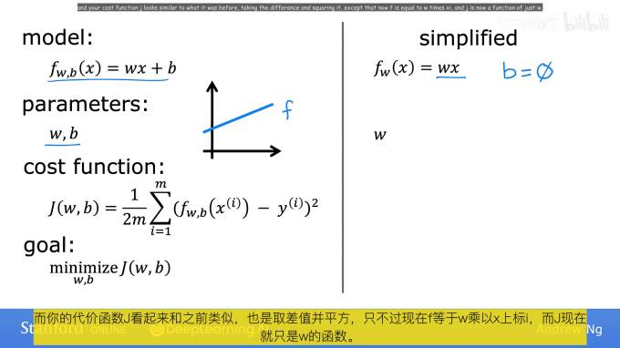
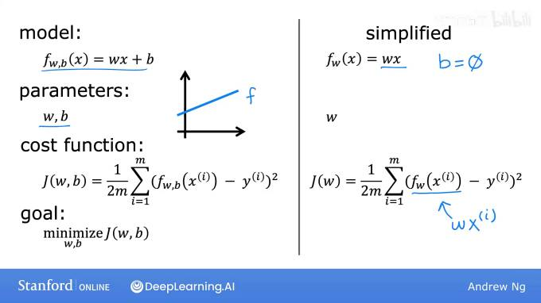
02:38目标也变得略有不同了，因为你只有一个参数 w，而不是 w 和 b。
02:46所以使用这个简化模型，目标就是找到一个能最小化 J 括号 w 的 w 值。
02:55为了直观地看到这一点，这意味着如果 b 设为零，那么 f 定义的直线看起来就像这样。
03:04你会看到这条线穿过了这里的原点，因为当 x 为零时，f 也为零。
03:12现在，使用这个简化模型，我们来看看当你为参数 w 选择不同值时，代价函数是如何变化的。
03:21具体来说，我们来看看模型 f 括号 x 和代价函数 J 的图表。
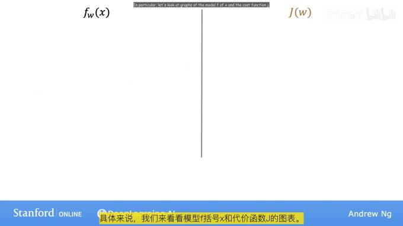
03:29我将把它们并排画出来，这样你就能看到两者是如何关联的。
03:36自光，注息对于1下标 W，首先，注意对于 f 下标 w，自光，注息对于1下标 W，当参数 w 固定时，也就是说它始终是一个常量，那么 f 下 w 就仅仅是 x 的函数，这意味着 y 的估计值取决于输入 x 的值。p。
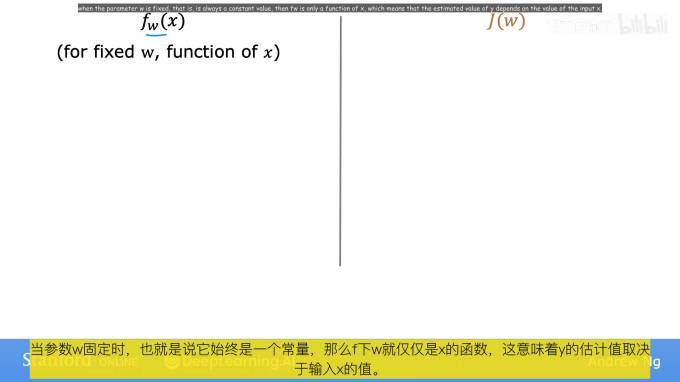
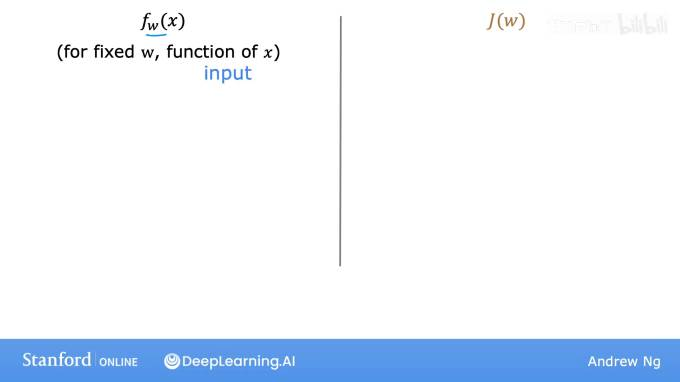
03:57相比之下，看右边，代价函数 J 是 w 的函数，其中 w 控制着由 f 下 w 定义的直线的斜率。
04:10所以由 J 定义的这个代价依赖于一个参数，在这种情况下，就是参数 W。
04:18那么，我们就把这些函数，f 下 w 括号 x 和 J 括号 w，并排画出来，以便我们能看到它们是如何关联的。
04:30我们从左侧的模型，也就是函数 f 下 w 括号 x 开始。
04:37这里，输入特征 x 在横轴上，输出值 y 在纵轴上。
04:45这里画了三个点，代表位置分别在(一，一)，(二，二)，(三，三)的训练集。
04:56我们为 w 选一个值，假设 w 是一。
05:00那么对于 w 的这个选择，函数 f 下 w 看起来就像这条斜率为一的直线。
05:11接下来你可以做的是，计算当 W 等于一时，代价 J 的值。
05:18你可能还记得，代价函数定义如下。
05:26所以如果你用 w 乘以 x 上标 i 替换 f 下 w 括号 x 上标 i，代价函数就看起来像这样，这个表达式现在是 w 乘以 x 上标 i 减去 y 上标 i。
05:41对于这个 w 值，结果发现，代价函数内部的误差项，也就是这个 w 乘以 x 上标 i 减去 y 上标 i，对于这三个数据点中的每一个都等于零。
05:54因为对于这个数据集，当 x 是一时，y 就是一。
05:59当 w 也是一时，f 括号 x 就等于一。
06:04所以对于第一个训练样本，f 括号 x 等于 y，差值为零。
06:11将其代入代价函数 J，你得到零的平方。
06:16类似地，当 x 是二时，y 是二，f 括号 x 也是二。
06:22所以同样，对于第二个训练样本，f 括号 x 等于 y，在代价函数中，第二个样本的平方误差也是零的平方。
06:34最后，当 x 是三时，y 是三，f 括号三也是三。
06:41在代价函数中，第三个平方误差项也是零的平方。
06:47所以对于这个训练集中的所有三个样本，对于每个训练样本 i，f 括号 x 上标 i 都等于 y 上标 i。
06:57所以 f 括号 x 上标 i 减去 y 上标 i 为零。
07:03所以对于这个特定的数据集，当 W 是一时，代价 J 等于零。
07:12现在，你可以在右侧绘制代价函数 J 了。
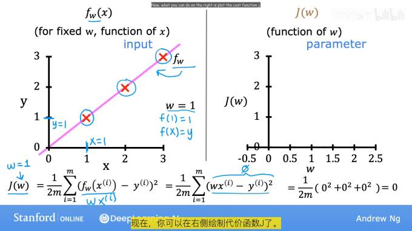
07:18注意，因为代价函数是参数 w 的函数，横轴现在标记为 w 而不是 x。
07:35所以你得到括号一等于零。
07:40换句话说，当 w 等于一时，J 括号 w 为零。
07:51现在，我们看看对于不同的 w 值，f 和 J 是如何变化的。
07:56W 可以取一系列的值，对吗？
08:00W 可以取负值，w 可以是零，也可以取正值。
08:07那么，如果 w 等于零点五而不是一，会怎样呢？
08:11这些图表又会是什么样子呢？
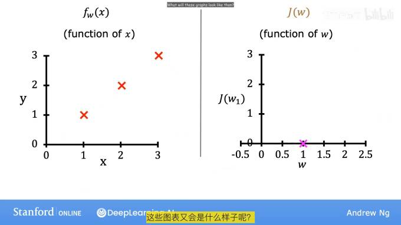
08:16所以让我们把 w 设为等于零点五。
08:20在这种情况下，函数括号 x 现在看起来像这样，是一条斜率等于零点五的线。
08:30我们再来计算当 W 是零点五时的代价 J。
08:37回想一下，代价函数衡量的是估计值，即 y hat 上标 i，也就是 f 括号 x 上标 i，与真实值 y 上标 i 之间的平方误差或差值，针对每一个样本 i。
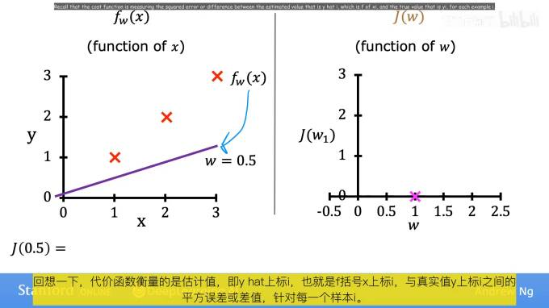
08:55所以，从视觉上看，当 x 等于一时，你可以看到误差或差值等于这条垂直线段的高度，因为这条小线段就是 y 的实际值与函数预测的值之间的差距，预测值在下方一点。
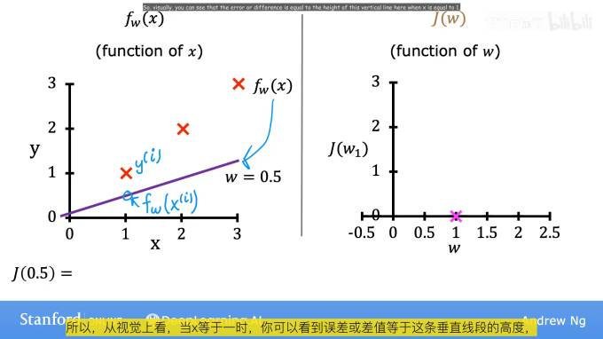
09:16所以，对于这第一个样本，当 x 是一时，f 括号 x 是零点五。
09:25那么，第一个样本的平方误差就是零点五减去一，然后平方。
09:32记住，代价函数会对训练集中所有训练样本求和。
09:38那我们接着看第二个训练样本。
09:41当 x 是二时，模型预测 f 括号 x 是一，而 y 的实际值是二。
09:52所以第二个样本的误差等于这条小线段的高度。
09:59而平方误差就是这条线段长度的平方。
10:04所以你得到一减去二，然后平方。
10:11重复这个过程，这里的误差，同样由这条线段表示，是一点五减去三，然后平方。
10:21接下来，我们把所有这些项加起来，结果等于三点五。
10:28然后我们将这一项乘以二 m 分之一，其中 m 是训练样本的数量。
10:37因为有三个训练样本，m 等于三。
10:42所以这等于二乘以三分之一，这里的 m 是三。
10:52我们算一下，结果是三点五除以六。
10:58所以代价 J 大约是零点五八。
11:07现在我们来尝试另一个 w 值。
11:13当 w 等于零时，f 和 J 的图表会是什么样子？
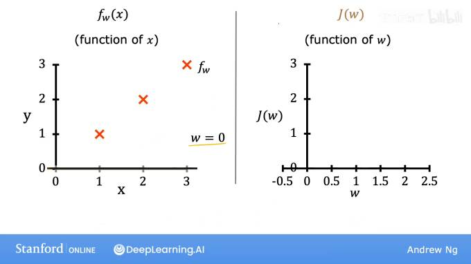
11:19结果是，如果 w 等于零，那么 f 括号 x 就是这条恰好落在 x 轴上的水平线。
11:29因此，每个样本的误差就是从这个点向下到代表 f 括号 x 等于零的水平线的一条线段。
11:39所以当 w 等于零时，代价 J 等于二 m 分之一乘以一平方加二平方加三平方。
11:51那等于六分之一乘以十四，大约是二点三三。
11:58那么，我们把这个点画在这里，W 是零，J 括号零是二点三三。
12:07你可以继续为其他 w 值进行这样的计算。
12:12因为 w 可以是任意数字，它也可以是负值。
12:17所以如果 w 是负零点五，那么直线 f 就是这样一条向下倾斜的线。
12:26结果是，当 W 是负零点五时，你最终会得到更高的代价，大约在五点二五，就是上面的这个点。
12:38你可以继续为不同的 w 值计算代价函数，以此类推，并把这些点画出来，对吧？
12:46结果是，通过计算一系列的值，你就能慢慢描绘出代价函数 J 的形状。
12:57回顾一下，每个参数 w 值都对应了左侧图中一条不同的拟合直线 f。
13:08而对于给定的训练集，为 W 选择的值对应右侧图中的一个单独的点。
13:18因为对于每一个 w 值，你都可以计算出代价 J 括号 w。
13:25例如，当 W 等于一时，这对应了这条穿过数据的拟合直线，并且它也对应了 J 的图中的这个点，代价括号一等于零。
13:45而当 w 等于零点五时，这给了你这条线，它的斜率更小。
13:52而这条线，结合训练集，对应了代价函数图上 w 等于零点五的这个点。
14:02所以，对于每个 W 值，你最终会得到一条不同的线及其对应的代价 J 括号 w。
14:11然后你可以用这些点描绘出右侧的这张图。
14:15鉴于此，你该如何选择导致函数 f 能很好拟合数据的 w 值呢？
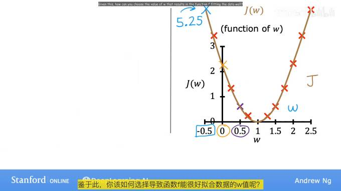
14:23嗯，你可以想象，选择那个使 J 尽可能小的 w 值，似乎是个不错的尝试。
14:32J 是衡量平方误差有多大的代价函数。
14:37所以，选择能让这些平方误差最小化，使它们尽可能小的 w，将给我们一个不错的模型。
14:46在这个例子中，如果你要选择那个导致 J 括号 w 可能的最小值的 w 值，你最终会选择 w 等于一。
14:56如你所见，这确实是个很好的选择。
15:00这得到了一条非常好地拟合了训练数据的直线。
15:05这就是在线性回归中，你如何利用代价函数来找到使 J 最小化的 w 值。
15:15或者在更一般的情况下，当我们有参数 w 和 b 而不仅仅是 w 时，你找到的是使 J 最小化的 w 和 b 的值。
15:26所以总给一下，你看。
15:29f 和 J 的图表，并深入理解了二者是如何关联的。
15:35当你改变 w 或改变 w 和 b 时，你最终会得到不同的直线。
15:41而当那条直线穿过数据附近时，代价 J 就小。
15:47所以线性回归的目标，就是找到能使代价函数 J 尽可能小的参数 w，或者 w 和 b。
15:57在本期视频中，我们用一个仅包含 W 的简化问题来完成示例。
16:03在下期视频中，让我们来可视化一下完整版线性回归，即同时使用 w 和 b 时，代价函数的样子。